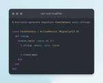

Write Software, Well
https://www.writesoftwarewell.com/
Spreading the joy of writing software using Ruby and Rails with the world.
フィード

Not-Null Shortcut in Rails 8 Migration Generator
Write Software, Well
Rails 8 lets you mark a database column as not-null by appending an exclamation mark after the column while generating a migration. It's a nice quality of life improvement. This post also contains a few things I learned after reading the pull request.
10日前

If You're a WordPress Developer, Learn Ruby and Rails
Write Software, Well
With the recent WordPress drama, many developers might be concerned about its future. While WordPress isn't likely to go away, now might be the perfect time to invest in learning other tools and technologies. I suggest Ruby on Rails - you won't regret it!
22日前
How to Count the Number of Commits After a Specific Commit in Git
Write Software, Well
Counting the number of commits after a specific commit in Git is a common task when you make small but frequent commits and need to squash them before rebasing from the main branch. This post shows one simple way to do this in git. Let me know if you know a better solution.
2ヶ月前
The Rails Router Handbook
Write Software, Well
For the past few days, I've been trying to learn everything I could about the Rails router. I compiled all of my notes together with the past articles on this blog, and published a handbook on the router. I hope you find it useful and you learn a thing or two about the incredible Rails Router.
2ヶ月前
Routing Concerns in Rails
Write Software, Well
You must have used concerns in Rails. Did you know you can also use concerns for your routes? They allow you to declare common routes to be reused in other resources and routes. This post covers the basics of routing concerns, including what they are, how they work, and when you might need them.
2ヶ月前
Understanding Shallow Nested Routes in Rails
Write Software, Well
Shallow nesting lets you avoid deep nesting by generating the collection actions scoped under the parent, but by not nesting the member actions.
2ヶ月前
Working with Resourceful Routes in Ruby on Rails
Write Software, Well
The concept of resourceful routing took me a long time to understand, but once it clicked, it changed how I viewed web applications. This post covers the basics: what a resource is, the routes it generates and how resourceful routing provides a nice organizational structure your Rails applications.
2ヶ月前
How to Route an Incoming URL to a Rack Application in Rails
Write Software, Well
The Rails router can dispatch an HTTP request to a Rack endpoint, either in your application or within a gem. This is useful when you want to provide a well-isolated web UI or front-end to the users of your gem. In this post, we'll learn why you may want to do this, how it works, and how to do it.
3ヶ月前
Map a Resourceful Route in Rails to Another Controller Class
Write Software, Well
If you want to map a resourceful route to another controller class in Rails, you can do so by passing the controller option to the resources method.
3ヶ月前
Working with Nested Resources in Ruby on Rails
Write Software, Well
Rails allows you to nest a resource within another resource to express the logical relationship between them. This post shows how nested resources work in Rails.
3ヶ月前
How to List and Filter Routes in Ruby on Rails
Write Software, Well
You can list all the routes in your Rails application by running the `bin/rails routes` command in the terminal. or by visiting `/rails/info/routes` path on a running Rails application.
3ヶ月前
Understanding the Match Method in Rails Router
Write Software, Well
In this post, we will learn about the match method, which forms the core of the Rails router. We'll also explore how the match method works behind the scenes. Once you really understand the match method and its options, the rest of the routing methods and shorthands become very easy to understand.
3ヶ月前
How to Override the Named Route Parameter ID in Rails
Write Software, Well
This post shows how you can override the default named parameter :id in Rails, by overriding the `to_param` method on the Rails model.
3ヶ月前
Understanding Named Routes in Rails
Write Software, Well
This post explains named routes in Rails. We'll learn how you can name a route, and how you can use the named helper methods to generate URLs corresponding to the route.
3ヶ月前
How to Add a root Route in Rails
Write Software, Well
A root route specifies what should happen when someone visits the home page of your application. This post shows how to add a root route.
3ヶ月前